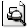
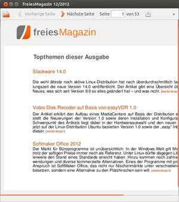

ePDFView
Archivierte Anleitung
Dieser Artikel wurde archiviert, da er - oder Teile daraus - nur noch unter einer älteren Ubuntu-Version nutzbar ist. Diese Anleitung wird vom Wiki-Team weder auf Richtigkeit überprüft noch anderweitig gepflegt. Zusätzlich wurde der Artikel für weitere Änderungen gesperrt.
Achtung!
Der Artikel kann nicht mit einer aktuellen, unterstützten Ubuntu-Version getestet werden!
Entwicklung wurde eingestellt, Projektseite vom Netz genommen und Paket aus den offiziellen Paketquellen nach Ubuntu 12.04 entfernt. Dieser Artikel kann mit dem EoL von Ubuntu 12.04 archiviert werden.
Zum Verständnis dieses Artikels sind folgende Seiten hilfreich:
  ePDFView ist ein minimalistischer, GTK-basierter PDF-Betrachter. Es ist ein Nachbau von Evince, der ohne die GNOME-Bibliotheken auskommt. Als Grundlage dient die Bibliothek Poppler. ePDFView bietet alle Standard-Funktionen wie die Navigation mittels Inhaltsverzeichnis (sofern vorhanden), das Durchsuchen nach Text und den Ausdruck von Dokumenten, während ein Kommentieren von Textstellen nicht möglich ist.
Die Weiterentwicklung des vor allem bei Nutzern von Xfce oder LXDE beliebten Programms wurde Anfang 2013 eingestellt, da der Hauptentwickler kein Interesse mehr an einer Weiterentwicklung hat. Eine Alternative bietet das Paket evince-gtk. Des Weiteren kommen unter Umständen auch MuPDF, qpdfview oder zathura in Frage.
Installation¶
ePDFView lässt sich bis Ubuntu 13.04 über die offiziellen Paketquellen installieren [1]:
epdfview (universe)
 mit apturl
mit apturl
Paketliste zum Kopieren:
sudo apt-get install epdfview
sudo aptitude install epdfview
Bedienung¶
Nach der Installation findet man bei Ubuntu-Varianten mit einem Anwendungsmenü einen Eintrag unter "Büro -> ePDFViewer" [2]. Alternativ kann das Programm auch über den Befehl epdfview gestartet werden. Außerdem wird das Programm ins Kontextmenü eingebunden. Wird also mit der rechten Maustaste  auf ein PDF-Dokument geklickt, steht die Auswahlmöglichkeit "Mit ePDFViewer öffnen" zur Verfügung.
auf ein PDF-Dokument geklickt, steht die Auswahlmöglichkeit "Mit ePDFViewer öffnen" zur Verfügung.
Die Bedienung von ePDFView ist weitgehend selbsterklärend. Vereinfacht werden kann sie durch einige grundlegende Tastenkürzel. Die folgende Tabelle zeigt einige Tastaturbefehle zur Steuerung von ePDFView:
| Tastaturbefehle | |
| Taste(n) | Funktion |
| ↓ oder Bild ↓ | Bildlauf runter |
| ↑ oder Bild ↑ | Bildlauf hoch |
| ⇧ + Bild ↓ | Nächste Seite |
| ⇧ + Bild ↑ | Vorherige Seite |
| Strg + + | Anzeige vergrößern |
| Strg + - | Anzeige verkleinern |
| F11 | Vollbildmodus |
| F9 | Index-Anzeige (wenn vorhanden) |
 Übersichtsseite
Übersichtsseite- Erstellt mit Inyoka
-
 2004 – 2017 ubuntuusers.de • Einige Rechte vorbehalten
2004 – 2017 ubuntuusers.de • Einige Rechte vorbehalten
Lizenz • Kontakt • Datenschutz • Impressum • Serverstatus -
Serverhousing gespendet von